Prof. Róberson Macedo de OliveiraTécnico em Agropecuária · Técnico em Agricultura de Precisão
→ avançar · ← voltar
Tempo 1 · o pânico · fevereiro de 2025
17,5 mil curtidas. 922 comentários.
FB
@forbesbr20 de fevereiro de 2025
"...alta demanda pela proteína, elevados custos de produção e ondas de calor..." (sobre a crise do preço do ovo).
17,5 milcurtidas
922comentários
Pergunta de abertura
Dos 922 que comentaram, quantos entendem de produção, de mercado, de custo? E quantos de nós já comentamos algo parecido sobre o preço de um alimento?
Tempo 1 · a postagem
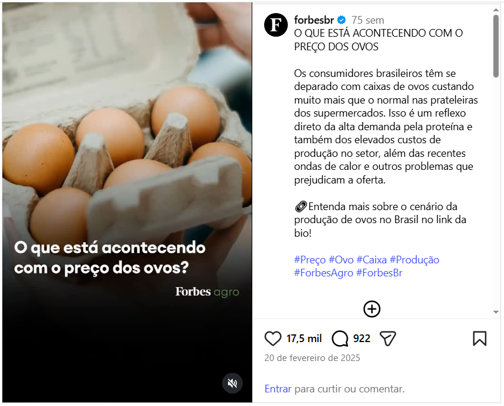
@forbesbr · 20 de fevereiro de 2025 · 17,5 mil curtidas · 922 comentários
Tempo 1 · as três causas na legenda
Estava tudo escrito ali
Trecho da legenda
Camada da cadeia
"alta demanda pela proteína"
jusante: consumo
"elevados custos de produção"
montante: milho, soja, ração
"ondas de calor"
ambiente: atravessa as duas
O post diagnosticou as três camadas em quatro linhas
Se estava tudo escrito ali, por que a discussão não foi sobre isso?
O problema não é ausência de informação, mas sim ausência de leitura e compreensão sistêmica.
Tempo 1 · o contexto que quase ninguém puxou
Duas crises, mesmo ano, causas diferentes
EUA
Surtos de gripe aviária, sobretudo H5N1 (houve também uma detecção pontual de H7N9 em lote comercial em 2025, sem o mesmo peso), derrubam o plantel de poedeiras: mais de 166 milhões de aves abatidas desde 2022. Dúzia: US$ 0,80 (2019) → pico de US$ 4,95 a 6,00 (início de 2025). USDA projetou alta de 41% no ano.
Brasil
O país não registrou gripe aviária em aves comerciais. Mesmo assim, a caixa de 30 dz de ovos vermelhos foi de R$ 171 para R$ 258 em Belo Horizonte entre janeiro e fevereiro de 2025 (Cepea/Esalq-USP). Causa: a ração encareceu porque o milho encareceu, com a área de milho verão na menor da série histórica da Conab (desde 1976/77).
O ponto
Duas crises de ovo, no mesmo ano, com causas completamente diferentes. Um post genérico sobre "crise do ovo" borra essa diferença. A cadeia produtiva não.
Tempo 1 · a crise americana
EUA: a crise que não passa
US$ 6,23dúzia, recorde em março de 2025 (quase o dobro de mar/2024)
≈40 miaves mortas só no 1º trimestre de 2025 (maior número desde 2015)
166 mi+aves mortas desde 2022, por gripe aviária
O governo prometeu controlar, e não controlou
O governo americano anunciou um pacote de medidas contra a alta, incluindo importação de até 100 milhões de ovos da Europa. O preço seguiu subindo até o recorde de março de 2025.
Tempo 1 · o preço do ovo nos Estados Unidos
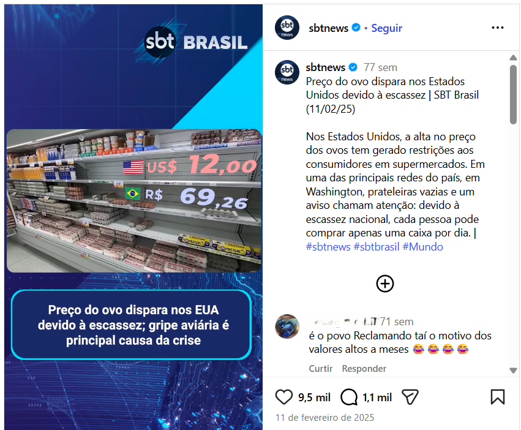
a crise do ovo nos EUA
Tempo 1 · quem ganhou com a crise americana
Quem lucrou com a crise
Em jun/2026, o DOJ dos EUA processou três granjas por inflar, entre 2022 e 2025, a cotação de referência (Urner Barry) usada por supermercados e restaurantes no país.
3granjas: Cal-Maine, Versova, Hickman's
53 miovos doados a bancos de alimentos
US$ 3,3 mipagos aos estados no acordo
Cal-Maine Foods
Triplicou o lucro no trimestre, e seus donos lucraram US$ 320 milhões vendendo ações no auge (Financial Times). Mesma crise, custo pra uns, lucro pra outros, às vezes por manipulação de mercado.
Tempo 1 · a manchete
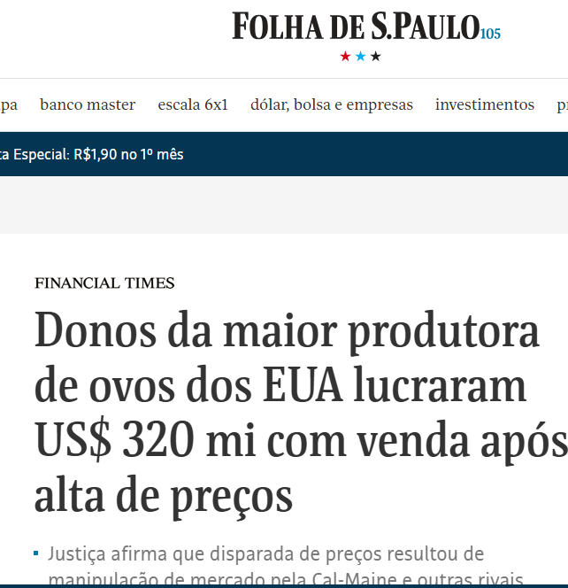
Folha de S.Paulo / Financial Times
Virada: em nov/2025, a Hickman's foi comprada por ≈US$ 300 mi pela Mantiqueira (JBS), hoje a maior processadora de proteína animal do mundo.
Tempo 1 · a crise brasileira
Brasil: ração cara, e um comprador novo
Sem gripe aviária em aves comerciais, a alta brasileira nasceu na ração: o milho encareceu, com a área de milho verão na menor da série da Conab (desde 1976/77). Há um segundo fator, menos visível, vindo da crise americana ao lado.
+185%exportação brasileira de ovos de mesa em 2025 (10,6 mil → 30,1 mil t)
17,75 mil texportadas aos EUA em 2025, partindo de 16,8 t em 2024
US$ 97,2 mireceita recorde com exportação em 2025
NCM 0407.21.00 (ovos de mesa), ComexStat/MDIC: mesma base do gráfico do próximo slide.
Tempo 1 · a crise brasileira, o comprador novo
O produtor teve para onde vender melhor
Mais um fator de alta, em cima do milho
A crise americana não ficou só no preço do milho lá fora. Ela puxou demanda direta por ovo brasileiro. Exportações totais saltaram de 10,6 mil para 30,1 mil toneladas entre 2024 e 2025 (+185%); para os EUA especificamente, de 16,8 toneladas para 17,75 mil toneladas, de quase zero ao principal destino do pico. Parte do ovo que iria para a gôndola nacional seguiu para o porto.
O movimento perdeu força após as tarifas dos EUA, em agosto: parte do volume foi redirecionada, com destaque para o Japão no fim de 2025.
Tempo 1 · a exportação, mês a mês
A janela que abriu e fechou
NCM 0407.21.00 (ovos de mesa) · ComexStat/MDIC · kg líquido. Pico para os EUA em jun/2025 (5,29 mil t no mês). Depois as tarifas de agosto de 2025 fecham a janela quase por completo.
Tempo 1 · Gracyanne entra
40 ovos por dia
No BBB25, Gracyanne Barbosa foi a única pessoa desta história inteira que fez uma conta, e fez em vídeo, calculando quantos ovos precisaria levar para casa se ficasse confinada por três meses.
O cálculo dela
Em vídeo publicado nas redes durante o BBB25 (jan/2025), ela mesma fez a conta: "40 ovos por dia, vezes 7 dias na semana, vezes 15 semanas", chegando a 4.200 ovos.
40 ovos/dia é uma afirmação de dieta extrema que circulou sem verificação nenhuma: mais um elo não conferido da mesma cadeia de boatos. Serve como âncora de cálculo, não como modelo nutricional.
Ela parou na primeira camada. E se a gente não parar aqui?
Tempo 1 · Gracyanne Barbosa no BBB25
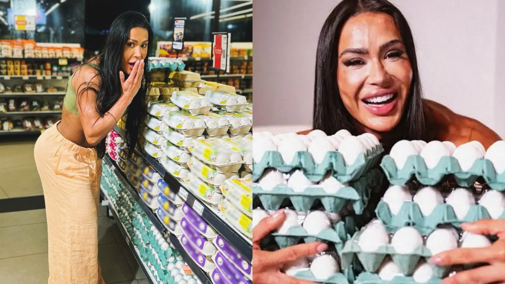
Gracyanne Barbosa e os ovos, antes e depois de virar assunto
Tempo 1 · a exposição virou negócio
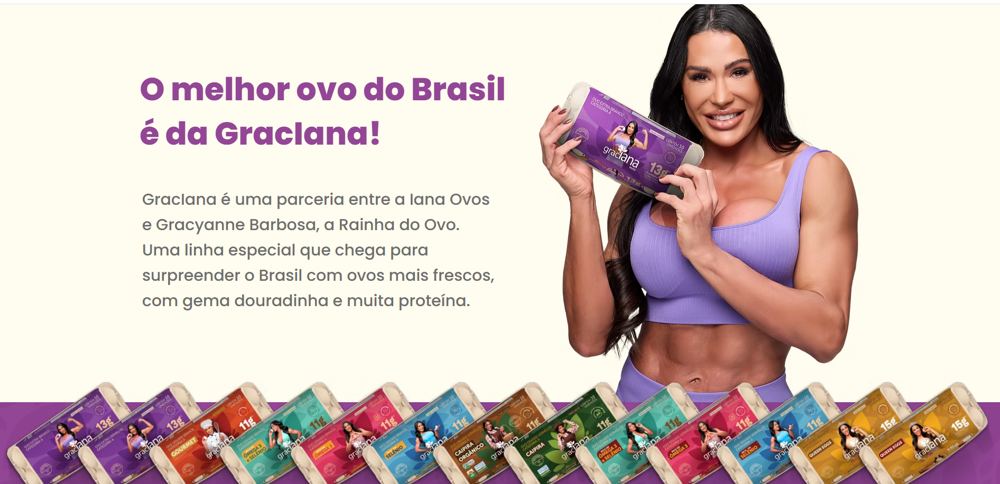
a fama virou marca própria, a Graciana, com a Iana Ovos
Iana Ovos é da Granja Faria (Global Eggs), de Ricardo Faria, o "Rei do Ovo", que comprou a Hillandale Farms (EUA) por US$ 1,1 bi em mar/2025.
Tempo 1 · a conta, um nível abaixo
Da dieta ao hectare
Camada
Cálculo
Resultado
Ela parou aqui
40 × 7 × 15
4.200 ovos
Ano inteiro
40 × 365
14.600 ovos
Equivalente humano
÷ 288 ovos/hab/ano (ABPA, 2025)
51 brasileiros
Plantel necessário
÷ 250 ovos/ave/ano civil (Hisex White, ciclo de 100 sem + vazio sanitário)
58 poedeiras
Ração
1.217 dz × 1,50 kg/dz
1,83 t/ano
Milho (63% da ração)
1.150 kg ÷ 6,61 t/ha
1.740 m²
Soja em grão (30% farelo)
711 kg ÷ 3,13 t/ha
2.270 m²
Terra
≈ 4.000 m²
Coeficiente: Hisex White (1,50 kg ração/dz; 484 ovos/ave no ciclo de 100 semanas ≈ 250 ovos/ave por ano civil, já somando o vazio sanitário entre lotes). Produtividade: Conab RS 2025/26. Não inclui a ração da fase de recria (≈5-6 kg/ave até o alojamento), que acrescenta cerca de 5-7% à ração total do sistema.
Tempo 1 · a área equivalente
56% de um campo de futebol
Um campo de futebol oficial tem 7.140 m² (105 × 68). A dieta de uma pessoa que comesse 40 ovos por dia ocupa isso, todo ano:
56%
campo de futebol oficial · 7.140 m²dieta de 1 pessoa/ano · ≈ 4.000 m²
Uma dieta. Um ano. Mais da metade de um campo de futebol.
Tempo 1 · escala da área
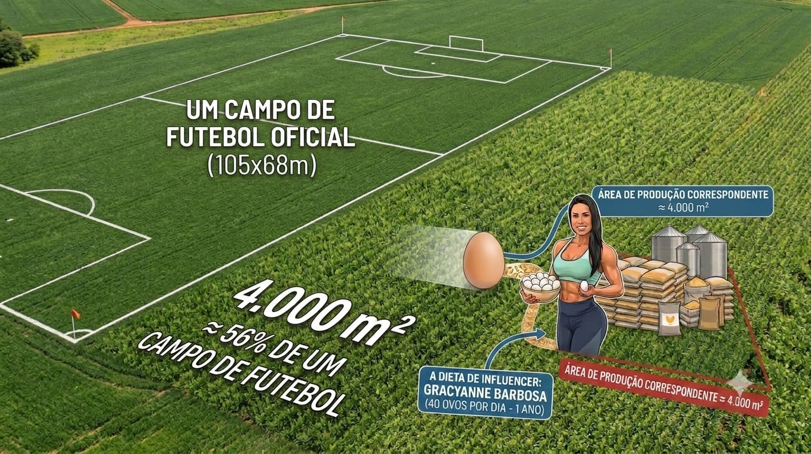
4.000 m² ≈ 56% de um campo de futebol oficial
Tempo 1 · os elos antes da lavoura
E antes do milho?
A conta parou no milho e na soja porque são o maior custo. Não porque são o começo.
Genética: linhagem melhorada por décadas, de poucas multinacionais (Hendrix, Hy-Line, Lohmann). A base genética do plantel brasileiro é importada.
Semente e fertilizante do milho: outra relação de troca, antes da colheita.
Núcleo vitamínico-mineral, calcário, aminoácidos: ~12% da ração que não é grão, com preço em dólar.
Sanidade: sem gripe aviária em ave comercial no Brasil. Não foi sorte, foi biosseguridade: por isso o produtor pôde exportar na crise americana.
Embalagem, energia, frete: a cartela tem cadeia própria; o galpão climatizado consome energia (e aí a "onda de calor" da legenda original volta a aparecer).
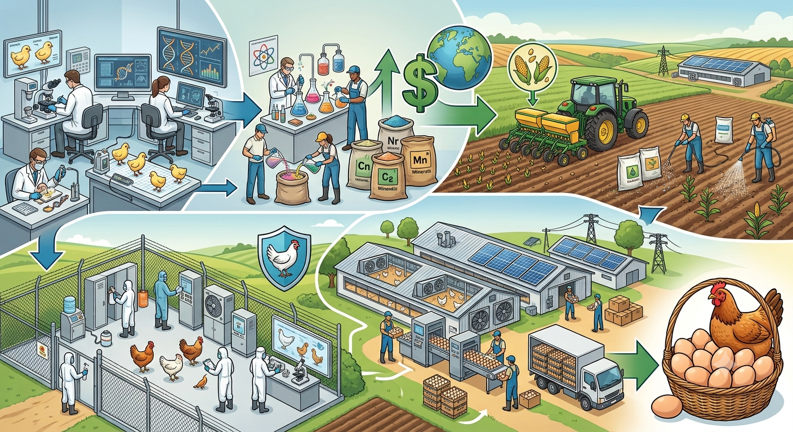
os elos que não aparecem na dúzia
Tempo 1 · a tendência que ninguém chamou de tendência
Consumo per capita de ovos no Brasil
Ano
Ovos/hab/ano
2015
191
2024
269
2025
288
2026 (projeção)
301
2027 (projeção)
312
Fonte: ABPA.
O ponto
"Crise do ovo" trata como evento o que é tendência. Gripe aviária e onda de calor são choques: a cadeia absorve. A subida de 191 para 288 em dez anos é estrutura: exige área nova, não absorção.
Tempo 1 · o que move 100 ovos a mais por habitante
Nada disso aparece numa cotação
A ciência mudou de ideia
Por décadas o ovo foi vilão do colesterol. A reabilitação dele no consenso nutricional é recente, e moveu hectares antes de mover manchete.
O corpo virou projeto
Academia, macro, app de dieta. Geração Z transformou o ovo em unidade de medida: "comi 6 ovos hoje" é frase feita.
É a proteína animal mais barata
Dúzia (~55 g o ovo, TACO): 12 × 7,15 g de proteína ≈ 86 g. R$ 4,99 ÷ 0,086 kg ≈ R$ 58 por kg de proteína: abaixo de frango e carne, muito abaixo do whey. Feijão e outras leguminosas ganham do ovo nessa conta: a vantagem do ovo é entre as proteínas de origem animal.
Marketing sem marca
Ovo é commodity, quase não tem publicidade própria, e foi o produto mais beneficiado pela onda proteica. Quem fez esse marketing foi influenciador, de graça.
O ponto
Nenhum desses quatro fatores aparece em uma cotação de mercado. Todos aparecem na sua planilha de custo, com dois anos de atraso.
Tempo 1 · a conta de escala
≈ 77 mil hectares a mais
De 2025 para 2026
+13 ovos/hab projetados × ≈213 milhões de habitantes = 2,8 bilhões de ovos a mais
traduzindo em lavoura → ≈ 33 mil ha de milho (≈4% da área de milho do RS) + ≈ 44 mil ha de soja (menos de 1% da área de soja do RS)
Em fevereiro de 2025, isso tudo parecia insustentável.
Tempo 2 · a ressaca · agosto de 2026
Dezoito meses depois
Cepea, jul/2026: o preço dos ovos ficou no menor patamar real para o mês desde 2019. Queda de mais de 15% frente a junho, até 18% frente a jul/2025. Causa: consumo fraco somado a produção elevada.
Praça · 30/07/2026
R$ / caixa 30 dz
Bastos (FOB)
123,03
Santa Maria de Jetibá (FOB)
127,33
Grande São Paulo (CIF)
129,36
Grande Belo Horizonte (CIF)
130,00
Recife (CIF)
136,92
O pontoOs 922 comentários envelheceram em dezoito meses.
Tempo 2 · o preço no varejo de Santa Maria
Duas fotos, onze meses, o mesmo mercado
Beltrame, Santa Maria: mesma bandeja de 30 ovos vermelhos, com onze meses de distância entre as duas etiquetas.
Preço cheio × preço "no clube"
04–05/ago/2025: R$ 17,99 (R$ 16,23 no clube) → R$ 7,20 / R$ 6,49 por dúzia
01–02/jul/2026: R$ 19,90 (R$ 14,42 no clube) → R$ 7,96 / R$ 5,77 por dúzia
Duas séries, dois sinais
O preço cheio subiu 10,6% nesses onze meses. O preço com fidelização caiu 11,1% no mesmo intervalo, no mesmo mercado. Qual das duas é "o preço do ovo"? A resposta muda o sinal da história inteira.
Tempo 2 · as etiquetas e a nota, no mercado
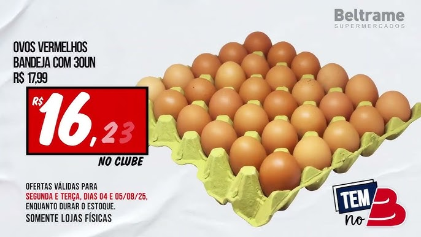
ago/2025 · vermelhos · R$ 6,49/dz no clube
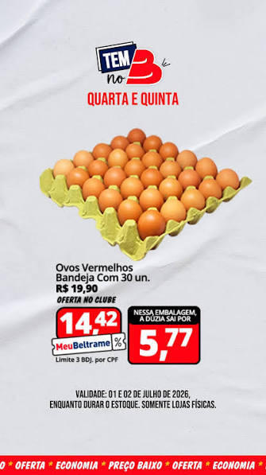
jul/2026 · vermelhos · R$ 5,77/dz no clube
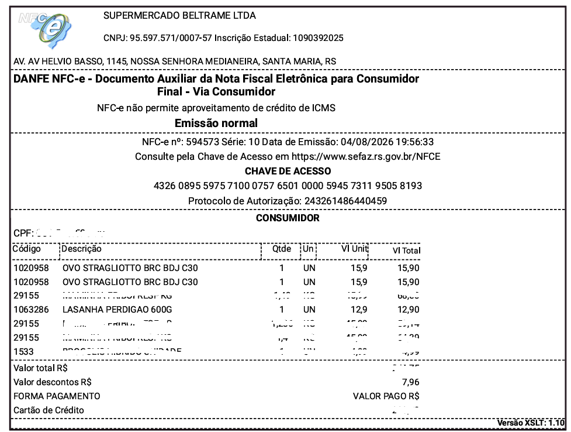
04/ago/2026 · nota fiscal · desconto em 3 dos itens
Tempo 2 · antes de olhar o preço
Quando falamos "milho", falamos de quê?
Destino
Cultivar/manejo
Tem cotação pública?
Grão para ração
híbridos de alta produtividade
sim: Cepea, Conab
Silagem
híbridos com mais fibra e massa verde
não: mercado local
Milho verde/doce
cultivares próprias
mercado local, hortifrúti
Pipoca
cultivares específicas
nicho, contrato
Amido, glicose, etanol
grão comum
indústria, contrato
A decisão é irreversível dentro da safra
Cultivar e manejo se escolhem na compra da semente e não se desfazem depois. Quem planta silagem troca liquidez por autossuficiência: sem cotação pública, sem estoque.
Tempo 2 · o mesmo milho, dois destinos
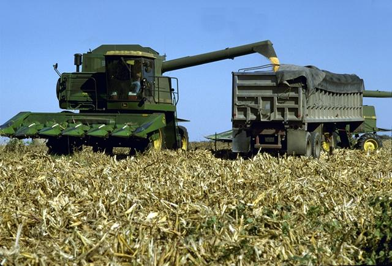
grão seco, para ração · domínio público, USDA
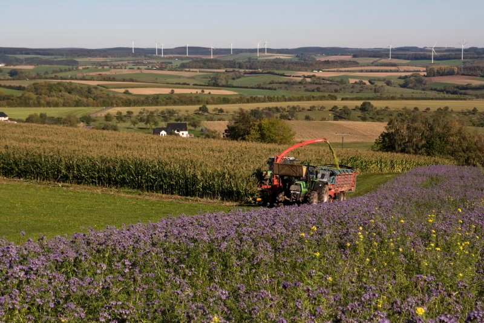
silagem, planta inteira verde · CC BY 2.0, BeardedDummy
Tempo 2 · a granja disputa o milho com quem
O preço não é um número. É uma disputa.
A granja de ovos não compete só com outras granjas por milho. Compete com:
ração de avesração de suínosconfinamento de boisilagemamido/glicoseetanol de milhoexportação
O ponto
O preço do milho não é um número simples. É o resultado de uma disputa entre cadeias por um mesmo grão.
Tempo 2 · a série de preços dos insumos
O que a granja pagava, e a data do post
Mês
Milho R$/kg
Farelo R$/kg
nov/2024 (pico do custo da ração)
1,3403
2,26
jan/2025 (pico do milho)
1,3683
2,09
fev/2025 (data do post)
1,3235
2,05
mar/2026 (vale)
1,1530
1,87
ago/2026
1,2000
1,95
Preço de compra do insumo, 32 meses, jan/2024 a ago/2026 (FONTE, PRAÇA). Milho convertido de R$/saca de 60 kg.
O ponto
O post caiu no platô mais alto da série. Fevereiro de 2025 é o sexto mês mais caro dos trinta e dois, e os seis primeiros estão dentro de 3% um do outro. A informação correta estava disponível e datada. Os 922 comentários discutiram outra coisa.
Tempo 2 · o custo dos grãos por dúzia
O que a ração custava, mês a mês
nov/2024
fev/2025
jun/2026
ago/2026
Milho (0,945 kg)
R$ 1,27
R$ 1,25
R$ 1,12
R$ 1,13
Farelo de soja, granel (0,450 kg)
R$ 1,02
R$ 0,92
R$ 0,87
R$ 0,88
Total grãos
R$ 2,28
R$ 2,17
R$ 1,98
R$ 2,01
Coeficiente: 1,50 kg de ração/dúzia (Hisex White), 63% milho e 30% farelo de soja. Preço de compra do insumo, série mensal de 32 meses (FONTE, PRAÇA); milho convertido de R$/saca de 60 kg. Queda de fev/2025 a jun/2026: 8,7% nominal. Do pico da série, em nov/2024: 13,1%.
O mesmo insumo, dois preços
Farelo em saca custa 12,7% mais que a granel na média da série, variando de 4,5% a 17,6% conforme o mês. Na ração por dúzia isso são R$ 0,10 a R$ 0,13 a mais. Mesmo produto, mesmo mês, preço diferente conforme o volume comprado.
Tempo 2 · os coprodutos da soja
A soja não produz um produto. Produz dois.
≈77%vira farelo: a proteína da ração do seu ovo
≈20%vira óleo: alimentação humana e biodiesel
Fevereiro de 2025. O mesmo mês do post.
O cronograma legal previa mistura B15 do diesel em março de 2025. O CNPE segurou em B14 por três motivos: impacto (pequeno) no diesel da bomba, fraude na mistura, e sobretudo o preço do óleo de soja de cozinha, item direto da inflação de alimentos. Não foi o farelo, não foi a ração.
Esmagamento (Abiove, 2025): 58,7 Mt → 45,1 Mt farelo, 11,7 Mt óleo. O elo entre biodiesel e farelo é real, mas pequeno: a Abiove estimou ~600 mil t de farelo a mais no 4º tri/2025 com o B15, cerca de 1% da produção anual.
Tempo 2 · os dois coprodutos
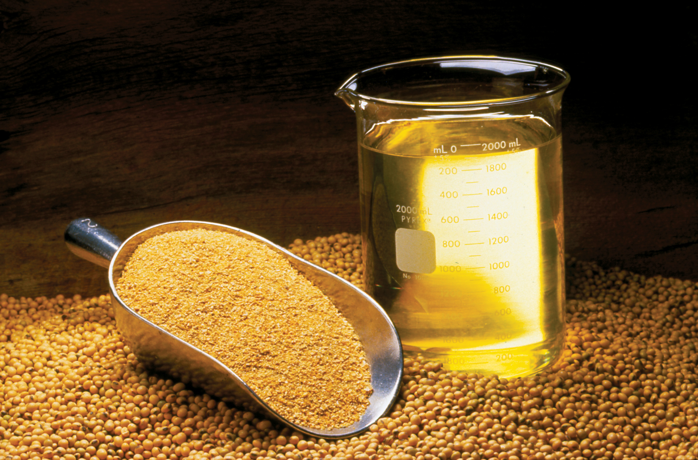
grão, farelo e óleo de soja · CC BY 2.0, United Soybean Board
Tempo 2 · a mesma engrenagem, em teoria
O mesmo grão, duas linhas opostas do índice de inflação
Óleo de cozinha sobe → farelo, em tese, fica mais escasso
ovo caro → inflação de alimentos: o item que pesou foi o óleo de soja de cozinha, não o farelo (fev/2025)
↓
CNPE segura o B15 para não pressionar diesel e óleo
↓
menos demanda por óleo → margem de esmagamento cai → esmaga-se menos
↓ em tese: farelo mais escasso → ração mais cara → ovo mais caro
Mecanismo do crush: farelo e óleo são coprodutos; alta em qualquer um eleva a margem de esmagamento e derruba o preço dos dois (farmdoc/Illinois, ASA/Missouri Soybeans, 2025). Magnitude no Brasil: Abiove estimou ~750 mil t a mais de esmagamento no 4º tri/2025 com o B15, gerando ~600 mil t de farelo, pouco mais de 1% da produção anual. Real, mas pequeno.
Tempo 2 · o preço do farelo, mês a mês
A série contraria a teoria nas duas direções
Mês
Farelo de soja R$/kg
fev/2025 (CNPE segura o B15)
2,05
jul/2025 (último mês em B14)
1,85
ago/2025 (B15 entra em vigor)
1,79
set/2025 (mínimo da série)
1,78
dez/2025
2,00
fev/2026 (pico local)
2,01
ago/2026
1,95
A teoria erra os dois sinais
Com o B15 segurado, de fevereiro a julho de 2025, a teoria previa farelo mais caro: ele caiu 9,8%, de R$ 2,05 para R$ 1,85. Com o B15 em vigor, a teoria previa farelo mais barato: ele subiu 12,3%, de R$ 1,79 em agosto para R$ 2,01 em fevereiro de 2026. Quem puxou o custo da ração para baixo ao longo de 2026 não foi o farelo, foi o milho, com a safra recorde de 2025/26.
Série mensal de farelo de soja a granel (FONTE, PRAÇA). O país opera em B15 desde 1º de agosto de 2025, com pressão do setor por B16 e meta de B20 até 2030 (Lei do Combustível do Futuro). Cuidado com o passo seguinte: o farelo subir depois do B15 não prova que o B15 encareceu o farelo. Seria o mesmo erro de atribuição, invertido. Um incremento de cerca de 1% da produção anual de farelo fica embaixo da safra recorde, da demanda de exportação e de Chicago.
Tempo 2 · do grão ao custo total
Margem apertada, não prejuízo
Somando o restante da ração (núcleo, calcário, óleo), fabricação e frete, o custo alimentar fica em torno de R$ 2,45 a 2,80/dz. Dividindo por 0,675 (a ração representa entre 65% e 70% do custo total de produção do ovo), o custo total fica em torno de:
R$ 3,63 a 4,15 por dúzia: custo total estimado R$ 4,10 a 4,56 por dúzia: Cepea atacado, jul/2026
As duas pontas caíram juntas
O insumo desceu com o produto. O produtor não foi esmagado: está operando numa faixa estreita, e com linhagem de alto desempenho essa faixa é um pouco mais folgada. É uma questão de relação de troca.
Tempo 2 · o ciclo de preço e investimento
Preço alto convida expansão
preço alto · 2025→produtor expande plantel→oferta cresce→preço desaba · 2026⟲ quem expandiu vende barato
Nos últimos dez anos a produção nacional cresceu 58% e o consumo 51%, chegando ao recorde de 62,3 bilhões de unidades em 2025 (98,6% do volume ficando no mercado interno).
O ponto
Aquela expansão de área que calculamos no Tempo 1 como hipótese já aconteceu. E é justamente por isso que o preço caiu.
Tempo 2 · três fenômenos, três velocidades
Choque, tendência e ciclo não são a mesma coisa
Choque: gripe aviária, onda de calor. Súbito, reversível.
Tendência: consumo per capita de 191 para 288. Lento, estrutural.
Ciclo: preço alto puxa investimento que derruba o preço. Recorrente, previsível.
Os 922 comentários trataram os três como a mesma coisa.
Tempo 2 · série nominal e série real
Real ou nominal?
O Cepea falou em menor patamar real desde 2019: série deflacionada. As séries de milho e farelo usadas até aqui são nominais.
Total grãos por dúzia
fev/2025
jun/2026
Nominal
R$ 2,17
R$ 1,98
Real (IPCA, jun/2026 = 100)
R$ 2,31
R$ 1,98
A queda real é maior
Deflacionando pelo IPCA (IBGE/Ipeadata, série número-índice, base dez/1993 = 100), a queda de fev/2025 a jun/2026 passa de 8,7% nominal para 14,3% real. Com a inflação no meio, o insumo caiu mais do que os números nominais sugerem.
Índice-base jun/2026 = 100, a última divulgação do IPCA disponível (IBGE/Ipeadata) até o fechamento desta aula. Os pontos de ago/2026 nas tabelas anteriores e a comparação de varejo do slide "duas fotos, onze meses" (que depende do IPCA de jul/2026) seguem nominais: o índice desses dois meses ainda não tinha sido publicado.
Tempo 3 · o coeficiente usado nas contas
De qual granja estamos falando?
Embrapa · mínimo viável
264 ovos/ave/ano (22 dz), referência de viabilidade econômica mínima, mais próxima do desempenho de sistemas caipira e cage-free.
Hisex White · comercial, ciclo 100 sem
≈250 ovos/ave/ano civil · 484 ovos por ave no ciclo de 100 semanas, mas o lote ocupa o galpão por mais tempo que isso: ciclo mais vazio sanitário entre lotes. 1,50 kg de ração/dúzia, usada em toda a conta desta aula.
Mesma dieta, plantel necessário
Com Embrapa (264): 55 poedeiras · Com Hisex White, por ano civil (250): 58 poedeiras
A unidade de tempo importa mais que a linhagem
A Hisex rende mais ovos por ciclo de postura que a referência Embrapa. Mas contando o ano civil inteiro, a unidade que interessa para custear um plantel, o tempo de vazio sanitário entre lotes reduz essa vantagem quase a zero: 250 contra 264 ovos por ave por ano. De qual granja estamos falando importa menos do que em que unidade de tempo estamos medindo.
Tempo 3 · a cadeia também ramifica para a frente
A granja não produz só ovo
Ovo líquido e em pó: vão para panificação, massa, maionese, sorvete. Você come muito mais ovo do que compra.
Poedeira de descarte: ao fim do ciclo (80 a 100 semanas) a ave sai da granja. Vira galinha de sopa, embutido, farinha de origem animal, e essa receita entra no fluxo de caixa do projeto, quase sempre esquecida.
Esterco/cama: vira adubo e volta para a lavoura de milho. O ciclo fecha fisicamente: o milho que virou ovo volta como nutriente para o milho.
Casca: calcário, ração animal.
O ponto
Um projeto que orça só a receita de ovo subestima a receita e ignora um retorno de nutriente. O sistema fecha; a planilha, às vezes, não.
Tempo 3 · o que ninguém está comentando
Em que sistema esses ovos foram produzidos?
A legenda do post não menciona. Os comentários não mencionam. A promoção do mercado de Santa Maria não menciona.
Tempo 3 · cage-free: o número
160 compromissos, 1,5% de prateleira
Terceira edição do Observatório do Ovo (Alianima, 2026): apesar da safra recorde de 62,3 bilhões de ovos em 2025, os sistemas livres de gaiolas representam até 1,5% do mercado varejista brasileiro.
1,5%cage-free no Brasil
78%cage-free no Reino Unido
160+empresas com compromisso público de transição
PerguntaOnde a cadeia trava?
Tempo 3 · sistemas de produção de ovos
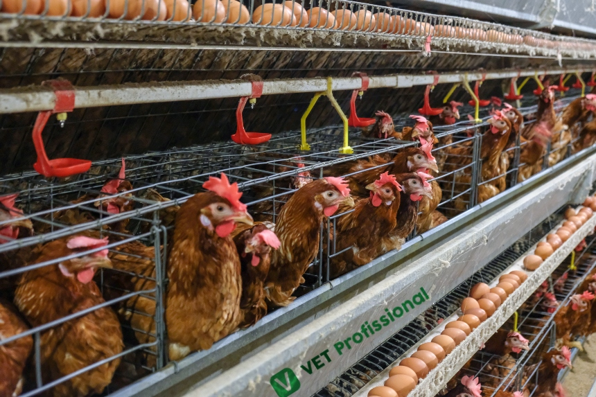
gaiola · o sistema padrão no Brasil
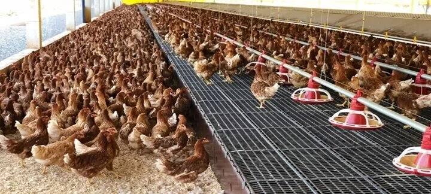
cage-free · sem gaiola, mas ainda confinado
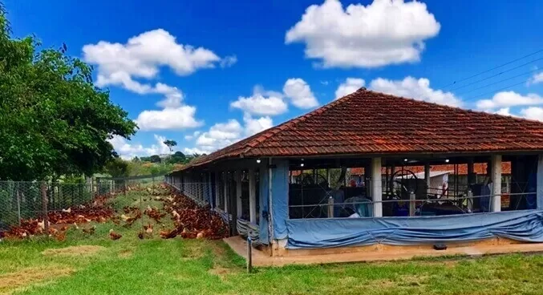
free-range · acesso à área externa
Tempo 3 · o mesmo erro, de novo
A cor da casca não é o sistema
Segundo a AVAL, muita gente associa ovo de casca marrom ao sistema caipira, quando a cor depende apenas da linhagem da galinha (Hisex, Lohmann etc. não são raças). O que muda é o sistema de produção, não a casca.
Essa confusão favorece fraudes e prejudica quem cumpre integralmente as normas técnicas desenvolvidas junto à ABNT: a NBR 16437, específica para ovo caipira.
O ponto
É exatamente o mesmo tipo de afirmação dos 922 comentários. Plausível, repetida, errada, e agora com consequência econômica sobre quem produz direito.
Tempo 3 · a saída da armadilha do preço
Receber preço, ou propor preço
Commodity
Preço dado pelo mercado (Cepea). Competição por custo e escala. A promoção de R$ 12,47 opera nesta coluna.
Diferenciado
Caipira, colonial, ômega-3, orgânico, cage-free, ovo de raça. Preço proposto. Competição por atributo, certificação, canal próprio.
O ponto
A cadeia brasileira do ovo opera hoje majoritariamente na primeira coluna. Migrar para a segunda exige atributo, certificação e canal próprio. Nenhuma das duas é "a resposta certa": são projetos diferentes, com estruturas de custo diferentes.
Tempo 3 · a colisão
Quem investe na transição agora?
Cage-free custa mais para produzir. E estamos num momento em que o preço do ovo está no menor patamar real desde 2019 e o produtor mal cobre o custo.
Não há resposta pronta. Duas coisas são verdadeiras ao mesmo tempo: a demanda social por bem-estar animal é real, e a viabilidade econômica dela depende de um preço que hoje não existe.
O custo maior não vem da genética: a mesma linhagem comercial de alta produção pode ser usada em sistema livre de gaiolas. Vem de densidade menor por metro quadrado, mais mão de obra, mortalidade maior e ovo sujo ou trincado em maior proporção. Nada disso aparece na etiqueta.
Tempo 3 · sistemas alimentares
Isso tem nome
Olhando além do agronegócio, fala-se em sistemas alimentares: toda a cadeia da produção ao consumo e ao descarte, com seus efeitos econômicos, sociais e ambientais. As decisões dentro da porteira não param na porteira: repercutem em emprego, ambiente e alimentação (Grisa et al., 2022).
A seta também vai na volta
O CNPE segurou o B15 em fevereiro de 2025 por causa do preço do óleo de soja de cozinha, uma decisão de política energética tomada fora da porteira que se conecta ao custo de ração pelo mesmo grão de soja: não foi a causa da queda do ovo, mas prova que a conexão existe. Se o sistema é uma rede, não existe "dentro" e "fora": existe nó e conexão.
Definição operacional: sistema alimentar sustentável é aquele que garante segurança alimentar e nutricional para todos sem comprometer a das gerações futuras (HLPE, 2014). Mapa completo e referências: site da disciplina.
Tempo 3 · o mapa
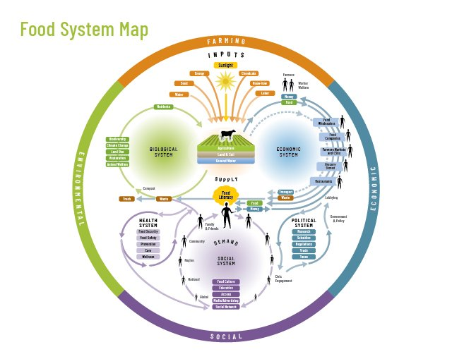
Vocês passaram esta aula desenhando um pedaço deste mapa · Nourish Life
Tempo 3 · a postagem, de novo
O comentário leva quinze segundos
Para responder bem à postagem do início da aula, precisamos de: três anos de série de preços, coeficiente de conversão alimentar, produtividade de duas culturas, dados de consumo per capita, cotação de atacado e varejo, e um relatório sobre sistemas de produção.
Pergunta que fica
Quantos posts nós comentamos por dia sem abrir essa cadeia?
Fechamento · o que vem
T1: A propriedade como empresa + SWOT
Hoje olhamos a cadeia de fora: de um post a um hectare. Na próxima aula entramos dentro da porteira: o que é uma propriedade rural, dentro de que sistema ela opera, e como diagnosticá-la antes de mexer em qualquer número.
Dados primários: Cepea/Esalq-USP · Conab · ABPA · Observatório do Ovo, Alianima (2026) · USDA · ComexStat/MDIC · Abiove (2025) · CNPE/MME · Embrapa · Tabela TACO · Departamento de Justiça dos EUA (2026) · HLPE/FAO (2014) · Grisa et al., Ed. UFRGS (2022).
Imprensa: CNN Brasil · Bloomberg Línea · Financial Times · BrazilJournal.
Outras fontes: post @forbesbr · Beltrame Supermercados (Santa Maria) · Hendrix Genetics/Hy-Line · mapa Nourish Life. Fotos de banco livre (Wikimedia Commons): USDA, BeardedDummy e United Soybean Board, domínio público / CC BY 2.0, crédito completo na legenda de cada slide.
Material elaborado pelo Prof. Róberson Macedo de Oliveira (Colégio Politécnico da UFSM), com apoio de IA (Claude Sonnet 5, Anthropic) no levantamento de dados e na checagem do que foi possível verificar em fonte primária; seleção final, interpretação e decisões de ensino são do docente. Ir para T1 → · Roteiro completo